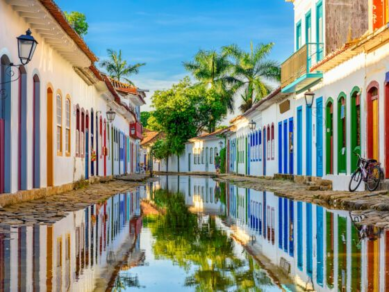

The majority of people think of Brazil in terms of its vibrant great cities, such as Rio de Janeiro and So Paulo; its incomparable natural areas, such as the Amazon or the Pantanal; and its world-famous beaches.
However, Brazil's complex, sometimes harsh colonial history, along with lush jungles, mountains, and countless beach coves, has endowed the country with little communities unlike any other.
Colorful villages in island-filled harbors to German small villages in semi-tropical mountainsides display a unique combination of architectural influences and exquisite settings.
Here are a few of Brazil's most beautiful tiny towns.

Paraty, Rio de Janeiro
This cobblestoned town, which was built in 1531 in a bay south of Rio de Janeiro and is alternately called Parati or Paraty, could not be more gorgeous. Views of dozens of green islands, sailboats, and the high, sylvan mountainside behind the town fight for your attention with views of whitewashed, centuries-old houses with a colorful border.